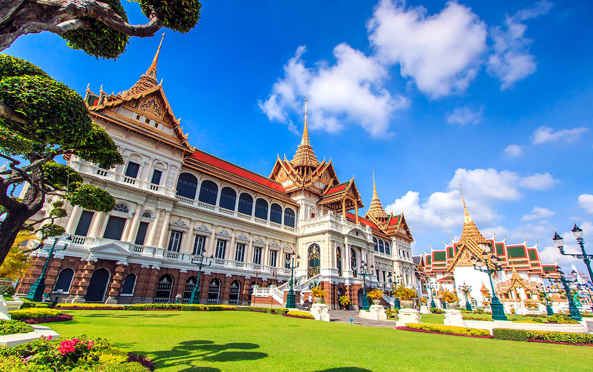

1 พระบรมมหาราชวังและวัดพระแก้ว
พระบรมมหาราชวัง และ วัดพระแก้ว คือจุดหมายปลายทางแรกใน กรุงเทพ ที่ไม่ควรพลาดด้วยประการทั้งปวง พระบรมมหาราชวัง สร้างขึ้นในปีพ.ศ. 2325 และเป็นที่ประทับของราชวงศ์มากว่า 150 ปี และเป็นแลนด์มาร์กที่โด่งดังที่สุดของ กรุงเทพ ในปัจจุบัน นอกจากนี้ วัดพระแก้ว หรือวัดพระศรีรัตนศาสดาราม ยังตั้งอยู่ภายในพระราชวัง ซึ่งชื่อวัดมาจากการประดิษฐานพระพุทธรูปศักดิ์สิทธิ์สมัยศตวรรษที่ 14 ซึ่งแกะสลักจากหยก